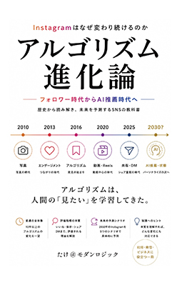
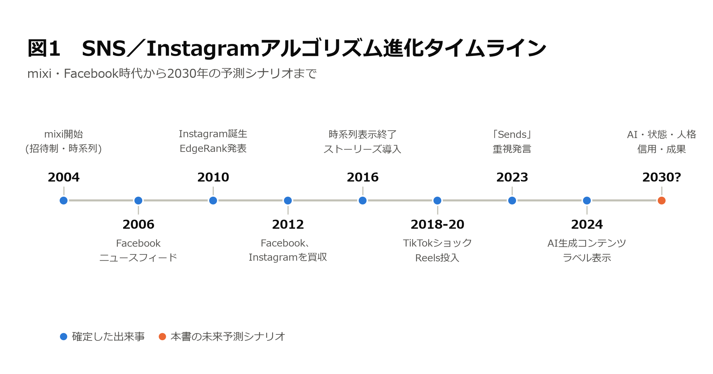
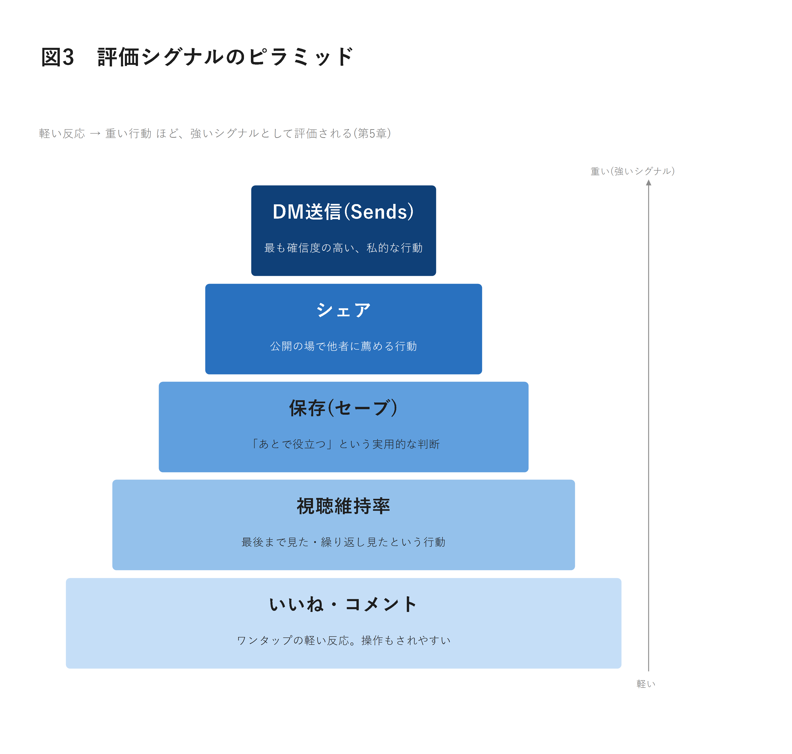
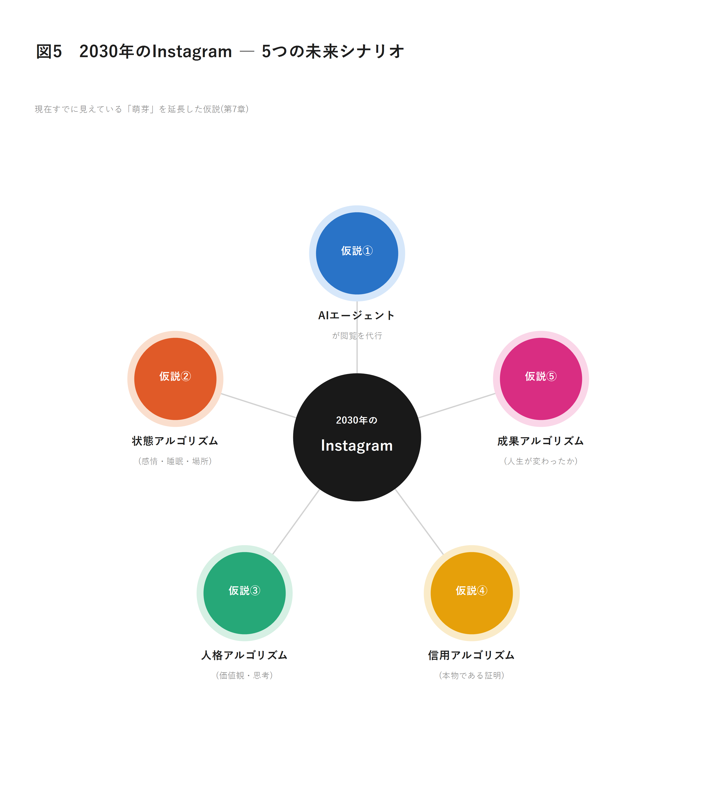

「投稿は19時が伸びる」「ハッシュタグは11個」
その攻略法を、あなたはまだ信じていますか？
攻略法は1年で古くなる。だが「法則」は10年使える。
mixiの時系列表示から、TikTokショック、そして保存・シェア・DM送信を重視する現在のInstagramまで。15年の変遷を貫く「3つの法則」で、2030年のSNSを予測する。
Instagramのアルゴリズムは、年に数回、時には毎月のように書き換えられている。攻略法は書かれた瞬間から古くなり、半年後には通用しなくなり、1年後にはほとんどが的外れになる。それでも書店やKindleストアには、同じ構造の攻略本が絶えず並び続けている。 本書が提供するのは、賞味期限つきの攻略法ではない。「Instagramは、なぜこれほど頻繁にアルゴリズムを変え続けてきたのか」――このたったひとつの問いを起点に、mixi・Facebook・Twitterの時代からTikTokショック、そして現在のInstagramまでを歴史として読み解き、そこから「3つの法則」を取り出す一冊。
著者：たけ＠モダンロジック ／ Kindle版・発売準備中

こんな感覚、ありませんか？
SNS運用に関わっていれば、必ずどこかでぶつかる壁。その正体を、あなたはまだ言語化できていないだけかもしれない
投稿時間もハッシュタグの数も守っているのに、ある日突然リーチが半減してしまう
「アルゴリズムが変わったらしい」という噂話を、毎回SNSでかき集めては乗り換えている
いいねは多いのに、保存やDM、そして売上にはなぜか繋がっている実感がない
フォロワー数は積み上がっているのに、肝心のリーチが思うように伸びない
行き詰まったとき、自分がどの指標でつまずいているのかすら説明できない
結局のところ、Instagramは何を評価する装置なのかを、腰を据えて理解できていない
攻略法を追いかけるか、法則で先回りするか
同じ「リーチを伸ばしたい」でも、法則を持てる人だけが、次の変化に慌てず備えられる
攻略法を追いかける（多くの運用者がハマる罠）
「今回もまた、正しい攻略法さえ見つければ」と思い込んでしまう
- ✓攻略法は書かれた瞬間から古くなり、書店には賞味期限つきの本が並び続ける
- ✓アルゴリズム変更のたびに、また一から情報を集め直すことになる
- ✓リーチが落ちた原因を、担当者自身が説明できず不安だけが残る
- ✓プラットフォームと運用者の、終わりのない追いかけっこの中で消耗し続ける
3つの進化の法則を使う（本書のアプローチ）
個別のテクニックではなく、変化そのものが従う法則をつかむ
- ✓評価基準は「真似しにくいもの・偽装しにくいもの」へ移ると知っていれば、次を先読みできる
- ✓評価対象は「公開の行動」から「私的な行動」へ重心が移ると理解できる
- ✓評価軸の変化は、プラットフォームの事業フェーズと連動すると見抜ける
- ✓mixi・Facebook・TikTok・Instagramと同じ力学を、他のSNSでも再現できる
Instagramだけの話ではない。15年の変遷は、ひとつの線でつながっている
時系列表示からエンゲージメント重視へ、フォロワー数から発見性へ、いいねから保存・シェア・DM送信へ――バラバラに見える変化は、ひとつの太い線でつながっている

mixiの時系列表示、Facebookの「EdgeRank」、TikTokショック、そして「Sends」重視発言――ひとつひとつは個別の出来事に見えても、通して読めば、Instagramが「何を評価してきたか」の変遷が浮かび上がる。
こんな方におすすめです
6つの世代で見る、Instagramが評価してきたもの
アルゴリズムの変遷を、ひとつの表に圧縮するとこうなる。何を評価するかは、常にひとつ前の世代の限界への回答として移り変わってきた
つながり〜2012年ごろ
友達の数、フォロワーの数。関係を築いていること自体が価値だった時代。
人気2012〜2016年ごろ
いいねの数、コメントの数。写真文化とともに、公開の承認に価値が置かれた。
興味2016〜2018年ごろ
時系列表示が終わり、エンゲージメントに基づくパーソナライズが始まる。
滞在2018〜2020年ごろ
ストーリーズの浸透とともに、長時間・高頻度でアプリを開かせることが最重要指標に。
AI推薦2020〜2023年ごろ
TikTokショックを経て、フォロー関係を離れコンテンツの質そのものをAIが評価する時代へ。
共有2023年〜現在
保存、DM送信という、より私的で確信度の高い行動が評価の中心に据えられている。
つながり→人気→興味→滞在→AI推薦→共有。読者が手にするのは個別の豆知識ではなく、次にどの評価軸へ進むかを見通す「進化の順路」である。
評価シグナルのピラミッド
軽い反応から重い行動へ。Instagramが今、本当に評価しているのはどの行動か

アルゴリズム進化を貫く、3つの法則
この3つさえ理解していれば、Instagramが次にどんな指標を持ち出しても驚くことはない
真似しにくいものへ
評価基準は、いつも「真似しにくいもの・偽装しにくいもの」へと移っていく。いいね回しが横行すれば、より偽装しにくい滞在時間やDM送信へ乗り換えられる。
私的な行動へ
評価対象は、いつも「公開の行動」から「私的な行動」へと重心を移していく。人は他人の目がある場所では体裁を取り繕うが、DMには本音が出る。
経営課題の反映へ
評価軸の変化は、プラットフォームの事業フェーズと連動する。アルゴリズムのアップデートは、その会社が今何に困っているかを雄弁に物語っている。
2030年のInstagram――5つの未来予測シナリオ
3つの法則を延長すると、次に何が見えてくるのか。すでに萌芽として存在する5つの仮説

仮説① AIエージェントが閲覧を代行する
評価すべき相手が、人間の目からその代理であるAIへと移っていく。
仮説② 状態アルゴリズム
感情・睡眠・場所・天気といった「今の状態」が表示内容と連動する。
仮説③ 人格アルゴリズム
表層的な興味を超え、価値観や人生のステージまで推定する「人格モデル」へ。
仮説④ 信用アルゴリズム
AI生成コンテンツが氾濫する中、「本物であること」自体が希少な評価軸になる。
仮説⑤ 成果アルゴリズム
「見られたか」ではなく、生活にどう役立ち行動変容につながったかが問われる。
目次
はじめに・全7章・おわりにで構成
なぜ攻略法はすぐ使えなくなるのか
攻略法とプラットフォームの終わりのない追いかけっこ／「変化の法則」を明らかにする、という本書の狙い
Instagram以前 ― SNSは何を競っていたのか
mixi・MySpace・Facebook「EdgeRank」／つながりの量的拡大から表示の質的選別へ
Instagram誕生 ― 写真が世界を変えた
「Burbn」からの引き算の設計／フィルターという民主化装置とインフルエンサーの誕生
アルゴリズム革命 ― なぜ時系列は終わったのか
2016年の方針転換とユーザーの反発／広告在庫の最大化という経営上の本質
TikTokが変えた世界
ソーシャルグラフ型からインタレストグラフ型へ／Reels投入と地政学的背景
Instagramは何を評価しているのか
いいね・保存・Sends・視聴維持率など、7つの評価要素の整理
アルゴリズム進化の法則
3つの法則の提示／グッドハートの法則との接続
2030年のInstagram ― 未来予測
5つの仮説とその実現可能性／アルゴリズムは人間を映す鏡である
必要なのは、次の攻略法ではない。
15年の変化を貫く、3つの進化の法則である。
mixiの時系列表示からFacebookの「EdgeRank」、TikTokショック、そして保存・シェア・DM送信を重視する現在のInstagramまで。本書は歴史をたどりながら、「真似しにくいものへ」「私的な行動へ」「経営課題の反映へ」という3つの法則を取り出し、2030年のSNSを具体的なシナリオとして描いていく。
※Kindleストア・Youtubeへのリンクは準備中です。